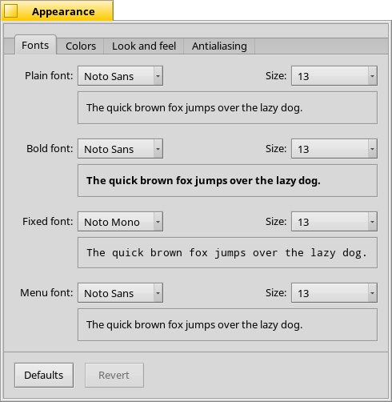

Görünüm
Görünüm
| Masaüstü Çubuğu: | ||
| Konum: | /boot/system/preferences/Appearance | |
| Ayarlar: | ~/config/settings/system/app_server/appearance ~/config/settings/system/app_server/fonts |
Görünüm tercihleri Haiku'nun görsel yüzünü değiştirmenize olanak verir.
 Yazıtipleri
Yazıtipleri

Haiku değişik amaçlar için üç adet standart yazıtipi kullanır. Sistem genelinde kullanım için arzu edilen boyutta düz, kalın ve sabit genişlikli yazıtiplerini buradan ayarlayabilirsiniz. Bunların yanında, menülerde kullanılan yazıtipi için ayrı bir seçenek de bulunmaktadır.
Yeni yazıtipleri yükleme
Bir .hpkg paketi olarak gelmeyen yazıtiplerini elle yüklemek için onları yazıtipi türüne göre istenilen non-packaged klasörü içinde altklasörlere yerleştirmeniz yeterlidir (psfonts veya ttfonts - ayrıntılı bilgi için Dosya sistemi yerleşimi) bölümüne bakın. TrueType yazıtipleri için örneğin aşağıdaki düzeni kullanabilirsiniz:
| /boot/system/non-packaged/data/fonts/ttfonts/ | bütün kullanıcıların kullanabildiği yazıtipleri | |
| /boot/home/config/non-packaged/data/fonts/ttfonts/ | yalnızca sizin kullanabildiğiniz yazıtipleri |
Renkler

sekmesinde kullanıcı arayüzünün belirli bölümlerinin renklerini değiştirebilirsiniz. Renkler sekmesi başka programlardan sürükle ve bırak yapılmasını destekler, dolayısıyla WonderBrush veya Icon-O-Matic gibi programlardan, ve ek olarak Arka Plan panelinden renkler bırakabilirsiniz.
Pencere dekorcuları

Dekorcular pencere ve grafik arabirim ögelerinin görünümünü ayarlamanızı sağlar. Haiku öntanımlı olarak yalnızca bir dekorcu ile gelmektedir; başka dekorcu yüklerseniz yine bu menüden seçip kullanmaya başlayabilirsiniz.
Öntanımlı Haiku dekorcusu, kaydırma çubuğunun ok düğmesi düzenini değiştirmenize izin verir; tekli düğme düzeni veya eskiden BeOS'un da kullandığı ikili düğme düzeninden birisini seçebilirsiniz. Bu ikincisi kaydırma yaparken fare hareketlerinden tasarruf etmenizi sağlar.
Yumuşatma

The tab , ögelerin ekranda nasıl oluşturulacağına dair değişik ayarlar sunar.
Glif düzgünleştirme
, tüm harfleri yatay ve dikey uçları yalnızca iki piksel arasında çizilecek biçimde yerleştirir. Bunun sonucunda mükemmele yakın bir karşıtlık ortaya çıkar, özellikle beyaz zeminde siyah metin daha belirgin, okunaklı görünür. Ek olarak seçeneği özellikle düşük çözünürlüklü ekrana sahip aygıtlarda yardımcı olur. Küçük boyutlu yazıtipleri, düzgünleştirme açıkken kötü görünebilir, ancak bu ayar sayesinde metin düzenleyicilerde Uçbirim'de düzgünleştirmenin avantajlarından yararlanabilirsiniz.
Aşağıdaki yakınlaştırılmış ekran görüntülerinde, düzgünleştirmenin yaptığı ayrımı görebilirsiniz:
 Düzgünleştirme: Kapalı |  Düzgünleştirme: Açık |
Bu sayfadaki Ekranı Büyüt pencerelerinin de bu değişik ayarlarla görüntülendiğini belirtmeden olmaz. Dolayısıyla tam anlamıyla kesin bir karşılaştırmayı, örneğin, sarı kalın sekme başlığına veya "33 x 15 @ 8 pixels/pixel metnine bakarak yapabilirsiniz.".
Yumuşatma türü
Oluşturulmayı iyileştiren başka bir teknik de metnin yanında tüm vektör grafikleri de destekleyen Yumuşatma tekniğidir. Çizgileri, bazı piksellerin rengini değiştirerek daha düzgün gösterir. Bunun için iki yöntem vardır:
yöntemi uçlardaki piksellerin yoğunluğunu değiştirir.
yöntemi ise LCD monitörlerde (özellikle yüksek çözünürlüklü olanlarda) daha başarılıdır. Piksel yoğunluğunu değiştirmek yerine ucu aşan pikselin iç kesir parçalarından birinin rengini değiştirir, çünkü LCD ekranlar her bir pikseli kırmızı, yeşil ve mavi bölümlerini ışıldatarak oluştururlar.
Aşağıda bu iki değişik yöntemi yakınlaştırılmış ekran görüntülerinde inceleyebilirsiniz:
Gri tonlu, Düzgünleştirme: Kapalı | LCD altpiksel, Düzgünleştirme: Kapalı |
Altpiksel tabanlı düzgünleştirme nesnelere hafif renkli bir parıltı ekler. Bu herkesin hoşuna gitmeyebilir. Haiku size bir kaydırma çubuğu ile size en uygun ayarı seçmenize olanak verir.
LCD altpiksel dokumasını etkinleştirirseniz, düzgünleştirme ile birlikte aşağıdaki gibi görünür:
Gri tonlu, Düzgünleştirme: Açık | LCD altpiksel, Düzgünleştirme: Açık |
Panelin alt kısmında iki düğme bulunur:
| her şeyi öntanımlı değerlere sıfırlar. | ||
| Görünüm tercihlerini ilk açtığınızdaki ayarlara geri döndürür. |